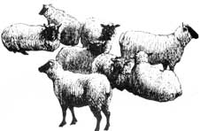

THE COUNTRY VET
Get rid of those pesky
parasites
A summer Sunday dinner of fried chicken, new potatoes, peas, and just-picked sweet corn - followed by wild blueberry shortcake - using products of your own farm can bring quite a bit of self-satisfaction. (A heavy meal like this can also make you ready for a nap.) While I was growing up on a family farm during the 1930s, these Sunday meals were like an early Thanksgiving, and often included several less fortunate relatives from the city. We never followed these heavy meals by napping, however, but by a family hike to "heifer hill," a mountain pasture, to salt the heifers.
My father would remind us that although we were eating well off the farm, by midsummer our livestock found slim pickings, and needed to be checked at least weekly for health problems or injuries. From the high meadow of the hill, we might look across the valley and see a neighbor family checking their sheep. On the way back, we'd take a little treat of oats and salt to the spare team turned in the horse pasture.
The main concern in those days was short pasture from a dry summer, which did not provide enough nutrition for livestock. Here in the Northeast, up until the mid-Fifties, if a herd of young stock, a flock of sheep, or team of horses on pasture appeared thin and "ribby" the logical explanation was that they were just not getting enough to eat. Internal parasites were considered a problem only on lowland pastures in the deep South. How things have changed! Questions to MOTHER indicate that herd and flock problems with thin animals are common in all parts of the United States and Canada. Let's look at a few:
We bought a pair of ewes with lambs by their side about five years ago, and borrowed a buck each year to breed them. At the end of two years, we had increased our flock to 10, but since then we have not been able to increase our numbers due to losses of individual animals each summer. The ones we lost developed diarrhea, swelled up under their jaws, went down, and died. The whole flock seemed so thin. The lambs that we butchered last fall hadn't really grown well and were poor. A neighbor said we have built up a worm problem. What can we do to get rid of it?
John Toffle, Vermont
It is nearly impossible to run a successful sheep operation without a year-round worm-control program. Fortunately, there are effective wormers available, administered both by hypodermic injection and as feed additives. The complicated (and sometimes ineffective) drenches that are given to sheep by mouth are, thank goodness, a thing of the past. As always, your local veterinarian is the best source of information for your particular situation.
If your veterinarian does not do sheep work, he or she can recommend one that does, and who will supply you with the proper anthelmintics (worm remedies). Most importantly, he or she will set you up on a year-round worm-control program.
A typical routine would be worming by injection before turning your animals out, reworming during the summer with a feed additive, and reworming again one or two times during the winter. Now, if it is midsummer and you have not wormed at all, the injection method will probably be most practical, and then another one should be administered a few weeks later.
Just as important is the rotation of pasture, if possible, from year to year. You should use injectable wormers before letting your sheep go on to clean pasture, and make sure you practice good hygiene. When you add new animals to your flock, or borrow a buck this fall, be sure they are wormed prior to entering your flock.
In the spring of 1991 when we turned our horses out to pasture, they were a little thin. Just a few weeks later, however, they were fat and appeared slick and shiny. By July, they were losing condition, and we had to start to grain them to keep their weight on. We only used them once in a while, to give the grandchildren a ride when they visited. However, we are ashamed of the way they look. This spring they picked up again, but we are afraid they will do the same thing as last year. Any suggestions?
Doug Spano, Pennsylvania
You don't mention anything in your letter about shots, teeth, or worming history on your horses. Tooth problems are common in horses, and will cause them to eat poorly and lose weight. The most common cause of weight loss and loss of condition in horses is from internal parasites, or worms. The most common worm-causing problems in adult horses is the so-called blood worm, or Strongylus. Your veterinarian can diagnose the kind of worm by examining feces from your horses in his or her office. One or two fresh fecal balls from each horse should be taken to the veterinarian to be examined. If you have several horses, only two or three individuals need to be checked.
Your veterinarian will suggest different courses of action, depending on the findings of the fecal exams. In your situation, the most economical worming will probably be to have the horses wormed by the veterinarian, at which time their teeth can also be checked. The veterinarian can also administer necessary shots such as tetanus (lockjaw) prevention or encephalomyelitis (sleeping sickness). Follow-up wormings will probably also be needed, for which your veterinarian may dispense products you can administer yourself.
You could of course go to the feed store and buy the wormers, but if you are not sure if the horse's poor condition is due to worms (or if you don't know what kind of worms), you might spend a lot of time and money and still have thin horses.
Anyone who owns a horse - or a dozen horses - will save money and avoid the unhappiness of sick animals if they have their veterinarian set up a yearly call to worm, check teeth, and administer disease-prevention biologics. Then, you and your veterinarian should devise a preventive medicine plan to cover the entire year. In addition, I am really excited about the idea of giving horses a feed additive wormer (such as Strongid C by Pfizer, which is available from your veterinarian) throughout the pasture season, following a once-yearly wormer such as Ivermictin.
We run a small herd of beef cattle out here, and for several years were very pleased that our cattle had always stayed in good condition with little grain (depending on good pasture, hay, and silage). However, in the last year or so, we have had to increase grain feeding to keep our animals in good condition, even on pasture. The problem can't be worms, since we worm the herd twice a year with a product we add to the feed. What could it be?
- Donald Hastings, Arkansas
There are so many wormers
on the market that were effective
five years ago, but which are
pretty much worthless today
Have you talked to your veterinarian about the problem? The fact is, there are so many different types of worms, and so many wormers on the market these days that were effective five years ago, but which are now pretty much worthless. So you should definitely call your veterinarian to properly diagnose and prescribe treatment. The extra cost of using an injectable wormer, followed by a feed additive (made specifically for your conditions and the kind of worms you are dealing with), will end up saving you money in the long run.
We raise dairy heifers from calves, and sell them close to freshening. We have good pasture all summer, and on dry years we supplement with grain, silage, and hay. Every once in a while, an individual heifer at pasture will appear thinner than the rest. Invariably, we will find her covered with lice.
We have usually had good luck getting rid of lice by treating the individual heifer with a dose of injectable wormer which we get from our veterinarian (the same as we do to all the heifers just prior to turning out). Our vet says we could use a louse powder, but this is easier for our situation. My question is, "Why is it always a nearly all white heifer that has the most lice?"
- Peter and Susan Masten, Michigan
You are very observant. I myself have wondered for many years why white heifers are more apt to have lice. I thought it was just a coincidence, or perhaps that the white skin was thinner. When I saw your question, I asked another veterinarian what he thought. His answer is that lice dislike heat. The hide on a black heifer is almost too hot to touch on a sunny August day, so the lice leave and go to the white heifer.
Editor's Note: Do you have questions for Dr. Mettler? Write them down and send them on in to The Country Vet, c/o Mother Earth News, P.O. Box 129, Arden, NC 28704.
|
 I've got you under my skin: The most common cause of weight loss in horses is from internal parasites, or worms |
|
|